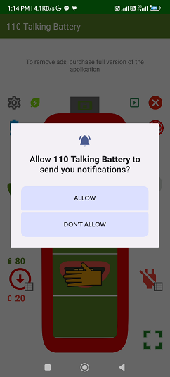
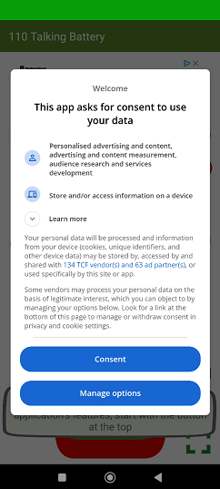

1.User's personal data - user securityThe application does not read, process or collect any user personal data (name, address, email etc.), so it does not transmit such data to the cloud, external servers or third-party companies, and does not create user accounts. |
2.Technical data of the deviceThe work application uses technical information from the device in a statistical and anonymous manner, in particular:
Some data may be transferred to Google servers for analytical purposes, to gain better insight into app usage and to help with app development. If you do not want to share any technical data outside your device, you can purchase the paid version of the app. It's smaller, faster, and more cost-effective, and doesn't contain ads or analytics components/classes/libraries, so it doesn't download or send any data to external servers. |
3. Notifications - background workTo run the application in the background (without a visible screen) during which notifications are displayed and speech or sounds can be played, the application uses the following Android system permissions:
 |
4.Voice synthesisThe application uses the engine (libraries) to synthesize voice, such as those installed on the device.Most often these will be:
|
5.Redirects to external sitesThe application contains links to external resources such as: |
6.EmailThe application allows you to pre-prepare queries via email directly from the application. The email includes basic technical information about the device such as manufacturer, model, and screen dimensions.The email is sent by the email client installed on the device and selected by the user to the address: battery.110kvs@gmail.com |
7.AdsThe paid application does not contain advertisements.The free version of the application displays advertisements. For this purpose, it uses standard Google libraries, which connect via the Internet to advertising providers and download advertisements. Permission used: com.google.android.gms.permission.AD_ID Before the ads are displayed, a screen appears asking for consent and the possibility of configuration:  |
© 2026 All rights reserved